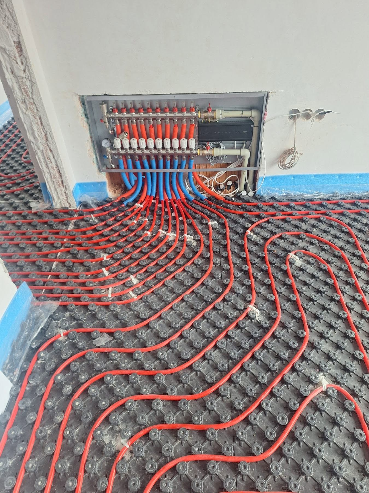
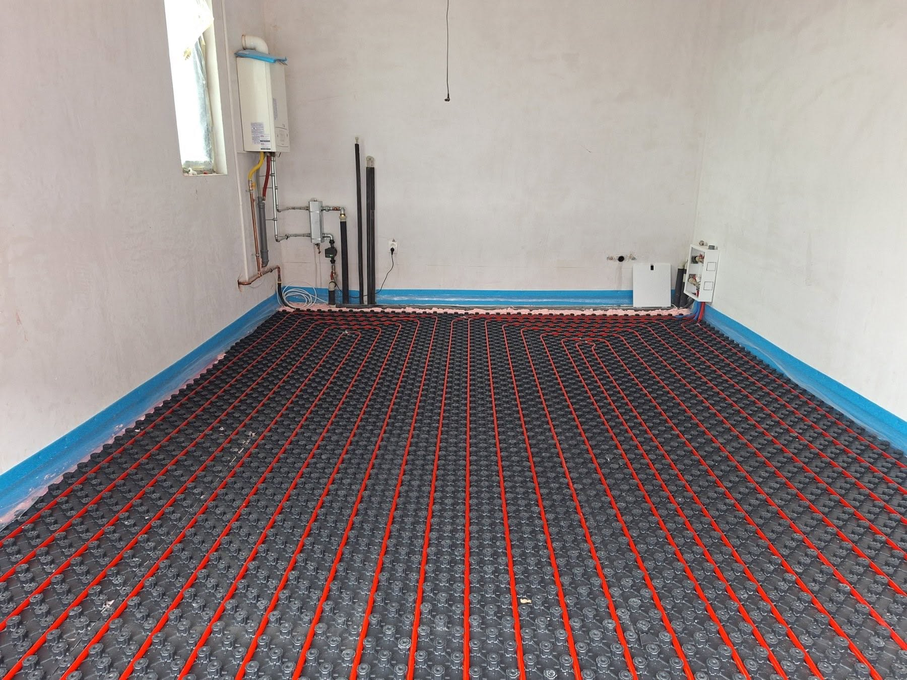
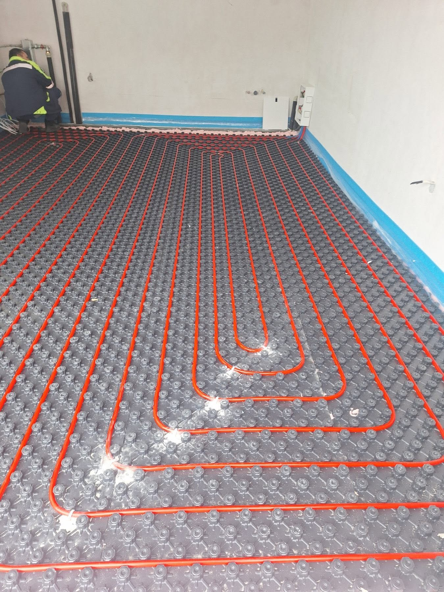
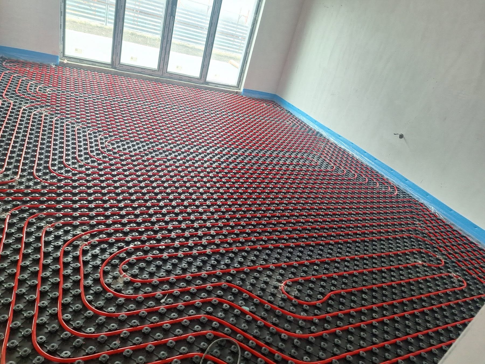

Какво включва подовото отопление
Базата ни е в Костинброд. Работим в София и София област — от оглед и оферта до монтаж и настройка.
Изграждаме водно подово отопление по помещения, с изчисление на кръговете, правилен подбор на колектор и съгласуване с източника на топлина. Работим както при ново строителство, така и при основни ремонти.
Изграждаме водно подово отопление за къщи и апартаменти с отделни кръгове по помещения.
Оразмеряваме системата по реални топлинни нужди и я съгласуваме с котел или термопомпа, когато обектът го изисква.
- Изчисление и оразмеряване по помещения
- Полагане на тръбни кръгове и колектори
- Зониране и управление с автоматика
- Проверка и подготовка преди замазка
Как се оферира подово отопление
Подовото отопление се оферира след изчисление по помещения, вид замазка и източник на топлина. Цената зависи от квадратура, колектори, автоматика и довършителни работи.
Какво не е включено / уточняваме честно: Не даваме коректна крайна цена без оглед и изчисление. Финишни настилки и строителни довършителни работи се уточняват отделно.
Оглед, изчисление и монтаж
Оглед
Квадратура, височина на пода и източник на топлина.
Изчисление
Оразмеряване на кръгове и разпределение по помещения.
Монтаж
Полагане, колектори, връзки и налягане тест.
Подготовка
Финален контрол преди замазка и пуск.
Къде изграждаме подово отопление
Изграждаме подово отопление в София и София област — за ново строителство и за обекти в ремонт.
Подробности по населени места ↓
Подово отопление на обект



Въпроси за подово отопление
Какъв е ценовият ориентир за подово отопление?
Подовото отопление се оферира след изчисление по помещения, вид замазка и източник на топлина. Цената зависи от квадратура, колектори, автоматика и довършителни работи.
Става ли за апартамент?
Да, когато конструкцията и височината на пода го позволяват. Проверяваме това на огледа.
С какъв източник работи?
Най-често с газов котел или термопомпа, според инсталацията на обекта.
Работите ли в София област?
Да — София, Костинброд, Сливница, Драгоман, Годеч, Божурище, Своге, Елин Пелин, Банкя и Нови Искър.